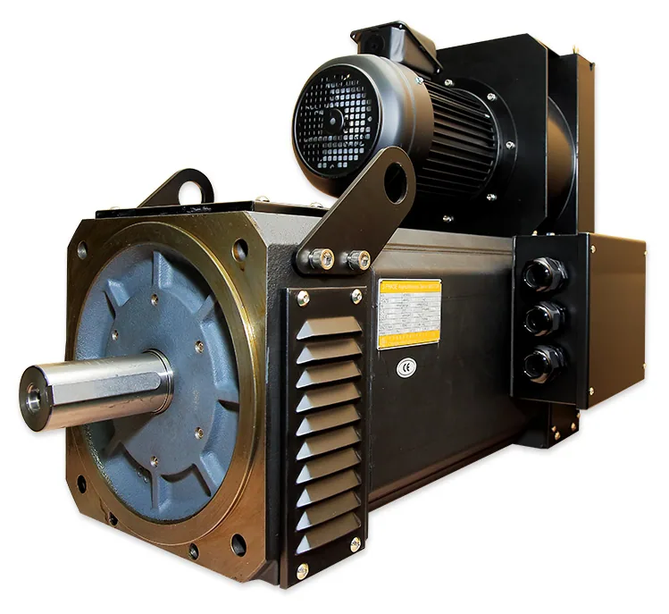
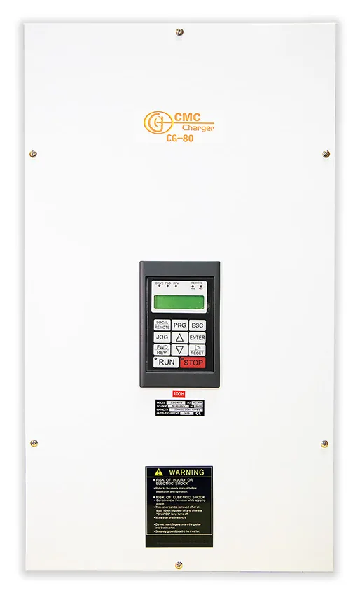

Lịch sử công ty
Charger Mechatronic (甲子機電) là nhà tích hợp hệ thống tự động hóa công nghiệp của Đài Loan, thành lập năm 2005. CMV là công ty của tập đoàn tại Việt Nam.
Giới thiệu
Charger Mechatronic Co., Ltd. (甲子機電) là nhà tích hợp hệ thống tự động hóa công nghiệp, cung cấp giải pháp truyền động, điều khiển và công nghệ thông tin cho ngành sản xuất. Lĩnh vực chính gồm: động cơ AC/DC và bộ điều khiển, bộ điều khiển động cơ servo, điều khiển biến tần, bộ điều khiển lập trình (PLC), bộ điều khiển số phân tán, hệ thống điều khiển thiết kế cho toàn nhà máy, động cơ chống cháy nổ và tích hợp hệ thống; cung cấp dịch vụ thiết kế, chế tạo, lắp đặt và hiệu chỉnh hệ thống điều khiển tự động.
Công ty cải tạo toàn diện hệ thống điều khiển của thiết bị và dây chuyền hiện có, hướng tới giải pháp tự động hóa trọn gói giúp khách hàng nâng cao năng suất. Công ty cũng hợp tác với các nhà chế tạo máy để cùng phát triển và kinh doanh hệ thống điều khiển, sao cho phù hợp hơn với nhu cầu của khách hàng.
Trước sự cạnh tranh gay gắt của toàn cầu hóa, Charger Mechatronic chủ động nâng cấp và chuyển đổi công nghệ, phát triển kỹ thuật cảm biến và điều khiển cho sản xuất thông minh thời Công nghiệp 4.0, hỗ trợ khách hàng thu thập dữ liệu từ máy móc, phân tích quy trình để cải thiện tỷ lệ vận hành, giúp quản lý chuỗi cung ứng phản hồi theo thời gian thực và hiệu quả hơn.


Các mốc phát triển
- 2005Thành lập công ty vào tháng 10
- 2008Mở văn phòng Quảng Đông
- 2010Thành lập trung tâm quản lý tại Tam Trùng, Tân Bắc
- 2011Đầu tư thành lập Quadrant (Shanghai) Mechatronic Technology Co., Ltd.
- 2012Phát triển biến tần dòng CG-80
- 2013Phát triển biến tần dòng CG-90
- 2014Doanh số hệ thống servo cho máy cắt bay đạt 200 bộ
- 2017Cùng đối tác Nhật Bản nghiên cứu động cơ servo cảm ứng hiệu suất cao, đáp ứng nhanh, chi phí thấp hơn
Pháp nhân tại Việt Nam
Hợp đồng và hóa đơn được ký, xuất bởi pháp nhân Việt Nam.
- Tên pháp lý
- CÔNG TY TNHH CHARGER MECHATRONIC
- Mã số thuế
- 0319206171
- Địa chỉ
- Số 933, đường Tạ Quang Bửu, Phường Bình Đông, Thành phố Hồ Chí Minh, Việt Nam
- Điện thoại
- 028 7302 0998
- Công ty mẹ
- Charger Mechatronic Co., Ltd. (甲子機電實業股份有限公司), Tân Bắc, Đài Loan
- Đại lý
- Nhà phân phối độc quyền chính thức của NUSCO (Nhật Bản) tại Việt Nam
Gọi hoặc nhắn Zalo cho kỹ sư CMV
Giờ làm việc: thứ Hai đến thứ Sáu. Hỗ trợ tiếng Việt, tiếng Trung và tiếng Anh.